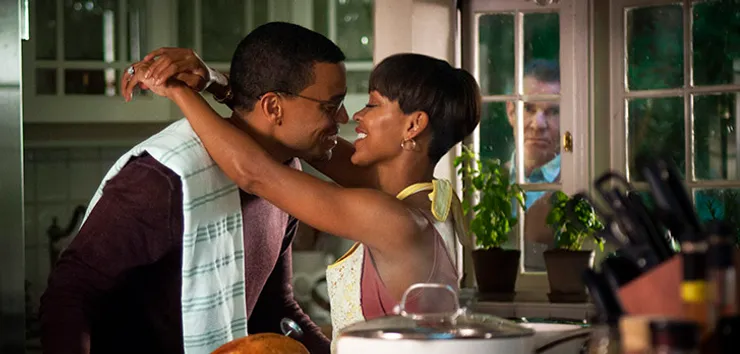

Midsommar: O Mal Não Espera a Noite
Esse suspense misturado com terror psicológico, ajudou a deslanchar ainda mais a carreira da atriz. O
filme conta a história de Dani, uma mulher solitária, inserida em um relacionamento conturbado, que após
passar por uma tragédia decide ir para um retiro espiritual e religioso com o seu namorado e seu grupo
de amigos. O que no início parecia uma forma de superar seus traumas, acaba criando novas feridas e
colocando Dani no centro de uma seita pagã. Florence dá um show de atuação nesse filme e você assistí-lo
no Amazon Prime.
Oppenheimer: uma obra de arte em forma de película
O filme Oppenheimer ganhou ainda mais destaque quando anunciaram que ele seria lançado no mesmo dia do
filme da Barbie, mas principalmente porque é dirigido por um dos diretores mais bem-sucedidos de
Hollywood: Christopher Nolan. A seguir vamos trazer uma crítica sobre essa produção que conta a história
do pai da bomba atômica.
Hóspedes Indesejados

Imagina você querer se mudar com o seu parceiro(a) e achar a casa perfeita, mas o senhor que te vende a
casa não te deixa em paz. E assim, que uma linda história de amor, com um casal recém casado com o sonho
de morar em uma bela casa e ter uma grande família começa a se tornar um verdadeiro filme de terror. O
antigo proprietário é obcecado pela casa e em ter sua família de volta e ele é capaz de fazer qualquer
coisa para recuperá-la.
Onde assistir: Apple TV